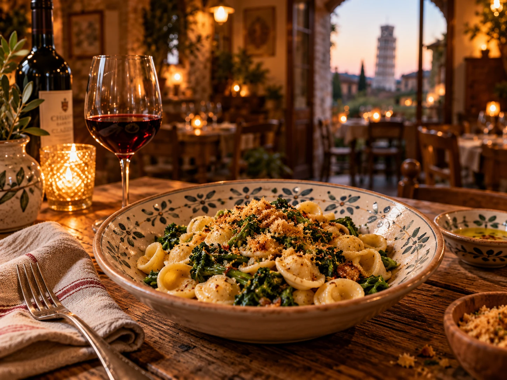
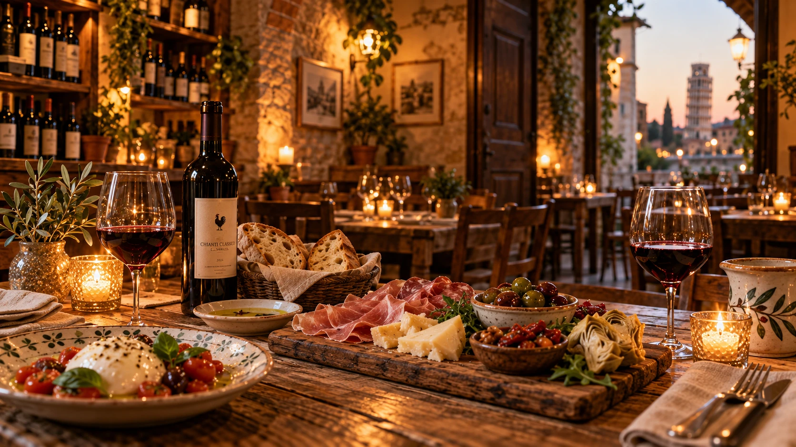
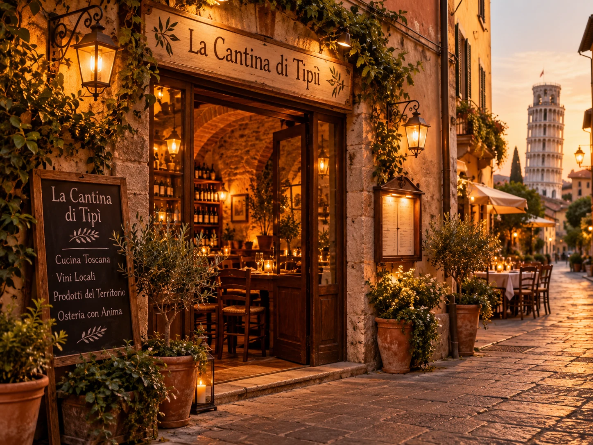
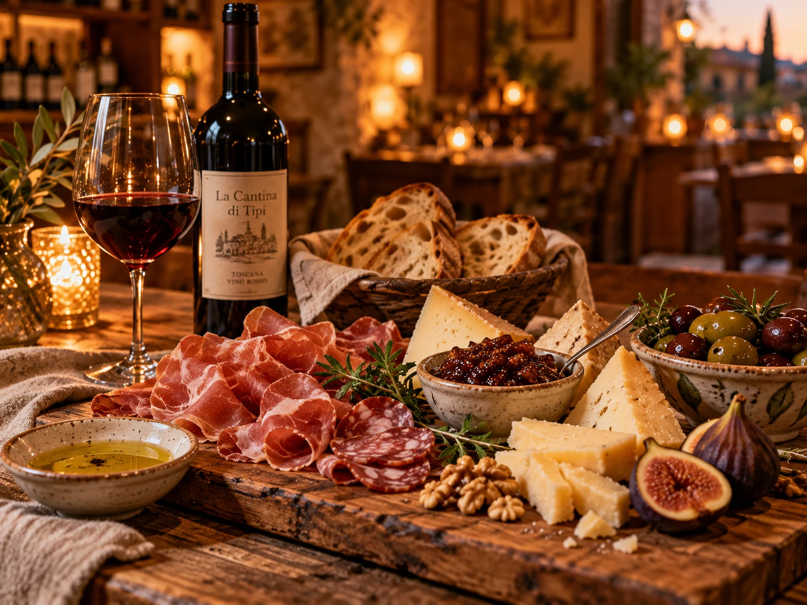
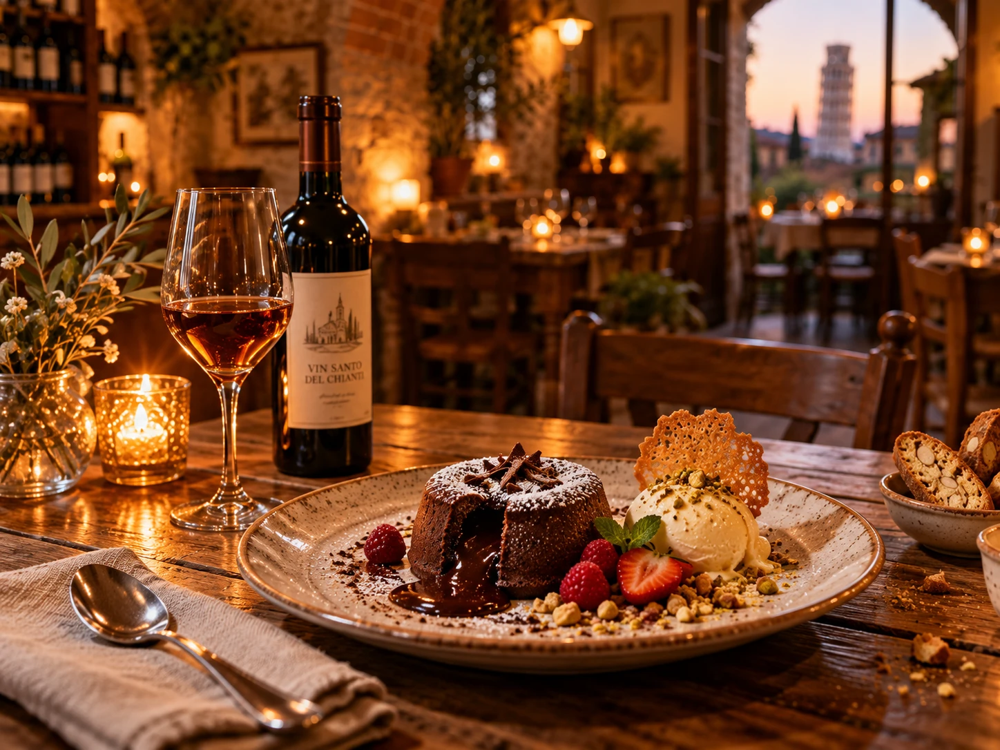

Cantina & Cucina · Pisa
Il sapore di una volta, a due passi da Piazza Dante.
Zuppe di stagione, tortelli al tartufo e un buon bicchiere di vino, in una piccola cantina nel cuore di Pisa. Prenotare è consigliato.

CucinaToscanafatta a mano

La nostra storia
Una cantina, poche regole, tanto gusto.
"Cibo semplice e vino buono: quello che ti aspetti, e quello che ti fa tornare."
La Cantina di Tipì è un locale raccolto in Via l'Arancio, tra Piazza Dante e Via Santa Maria. Qui la cucina è toscana e sincera: pasta fresca, zuppe di verdure del giorno, antipasti per condividere e dolci della tradizione, accompagnati da una carta di vini scelti.
Fatto a mano
Pasta ripiena e dolci preparati con cura.
Di stagione
Zuppe e verdure cambiano con i giorni.
Vino & convivio
Un tavolo, un calice, nessuna fretta.
★ ★ ★ ★ ★
Le recensioni lodano la pasta fatta in casa, i tortelli al tartufo e i consigli sul vino.4,7 su Google · oltre 500 recensioni
Vieni a trovarci
Dove siamo
La Cantina di Tipì
Indirizzo
Via l'Arancio, 48
56126 Pisa (PI)
56126 Pisa (PI)
Telefono
Orari
Lun–Mer · 12:30–15:30 / 18:00–19:30
Gio · 12:30–15:30
Ven · 19:30–22:15
Sab · 12:30–15:30
Dom · chiuso
Gli orari possono variare: telefona per confermare.
Gio · 12:30–15:30
Ven · 19:30–22:15
Sab · 12:30–15:30
Dom · chiuso
Gli orari possono variare: telefona per confermare.
Servizi
Prenotazione consigliata · Tavoli all'aperto · Carte accettate · Opzioni vegetariane
Social
Indicazioni
Via l'Arancio 48
Pisa
Atmosfera
Scopri la cantina


